Backrooms Extras
These scenes are new in Part 3.1. They weren't in the PowerPoint. Click a picture to see it full size, or click Play this scene to jump straight in with full sanity and one almond water.
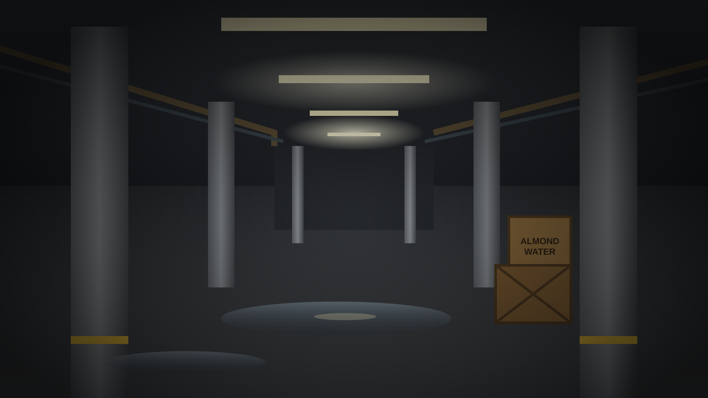
The Habitable Zone
A damp concrete warehouse with lights that flicker on and off. It's quieter here, but you're not alone.
Play this scene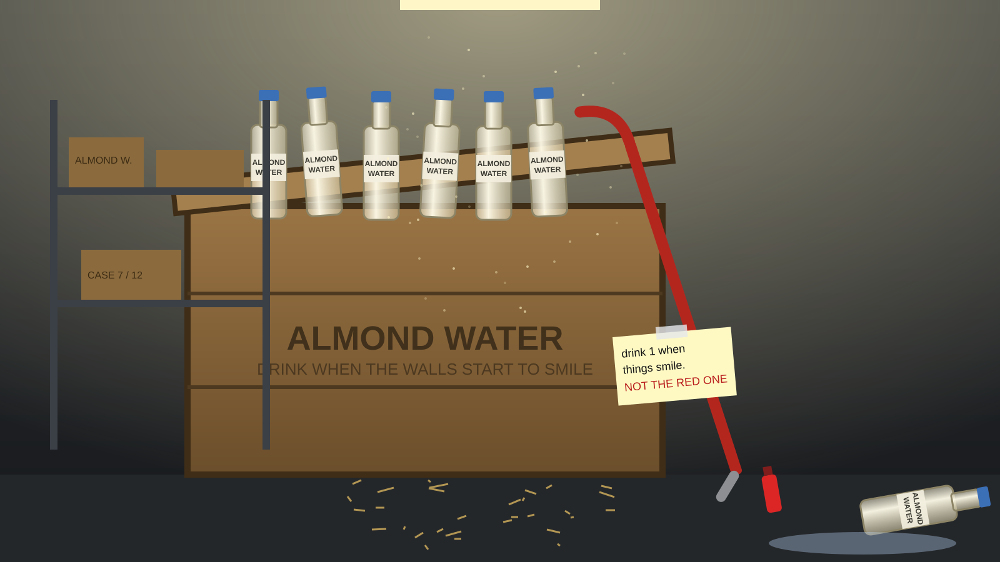
Supply Crates
Someone left almond water and a red crowbar here. The crowbar counts as a weapon for the fight later.
Play this scene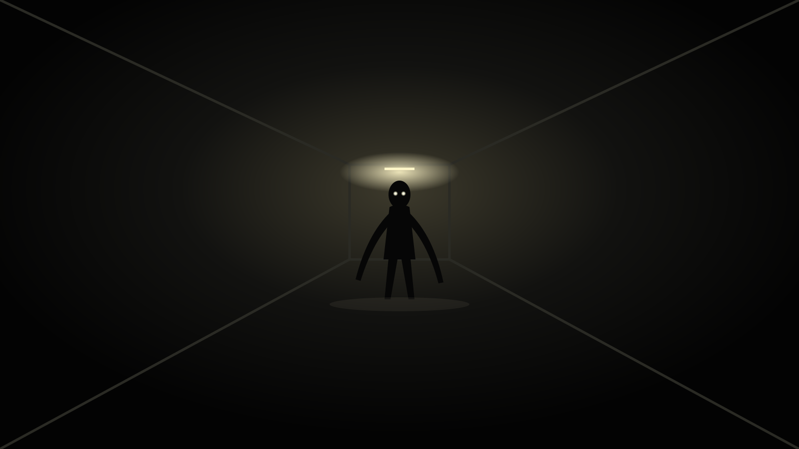
The Dark Hall
A skin stealer is walking toward you. You have 3 seconds to hide before it sees you.
Play this scene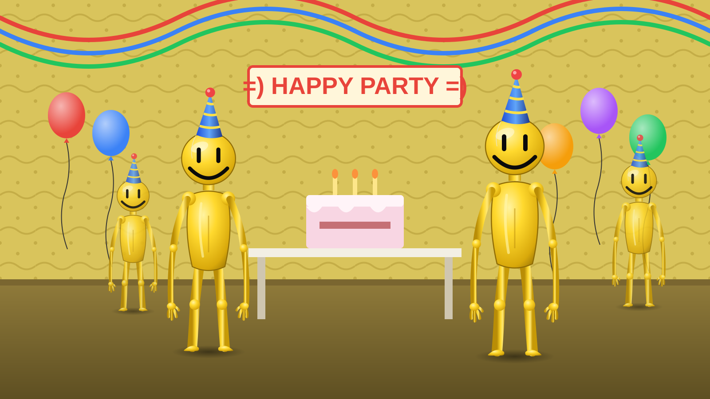
The Party
Balloons, streamers, a cake, and partygoers. Don't eat the cake, don't smile back, and don't let them hear you. Sanity drains twice as fast here.
Play this scene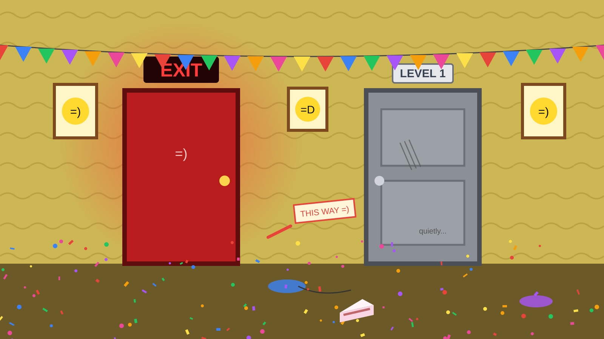
Two Doors
A glowing red EXIT or an old squeaky grey door. Remember the note about red things. Open the grey door slowly.
Play this scene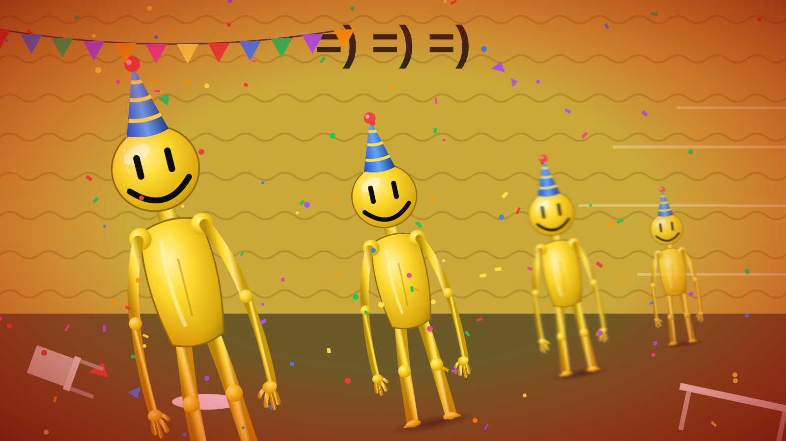
The Music Stopped
They heard you. You get 2.5 seconds to run for the door or dive under the table.
Play this scene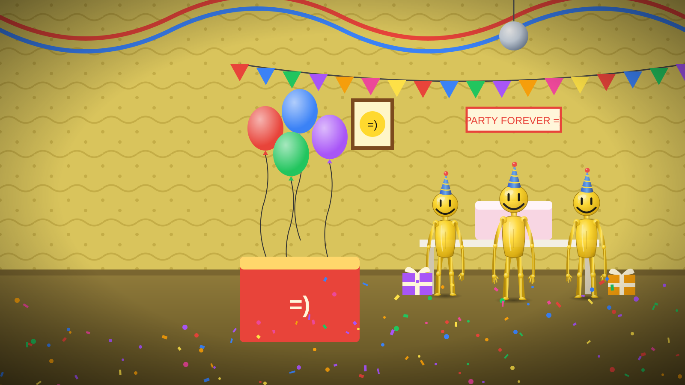
Back to the Party
After its mutation, the virus comes with you into Level Fun. It can hear the partygoers' hearts. Sneak past, pop a balloon, or let it fight.
Play this scene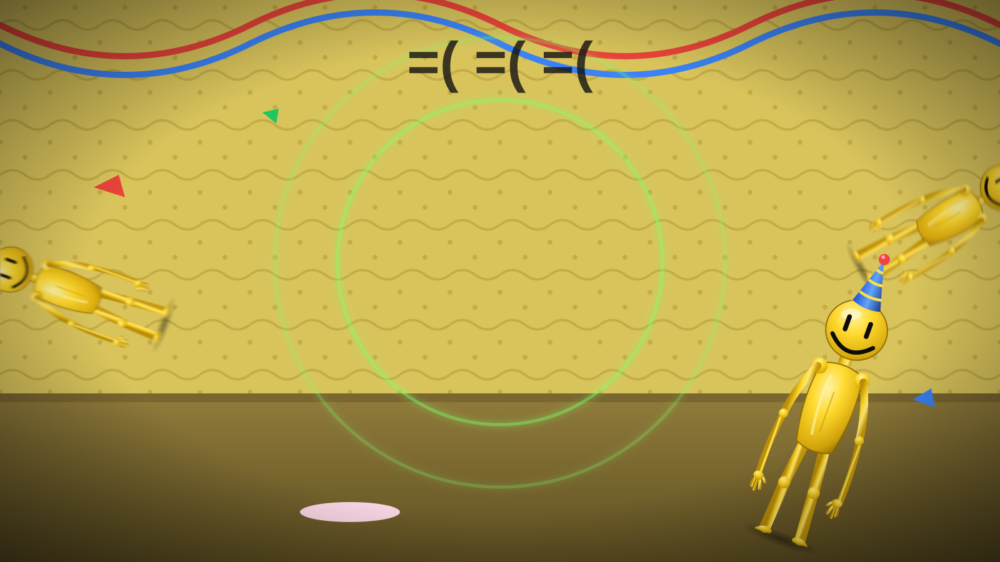
Twelve Times Stronger
The virus throws partygoers across the room. Then the music stops, and you get 3 seconds to run.
Play this scene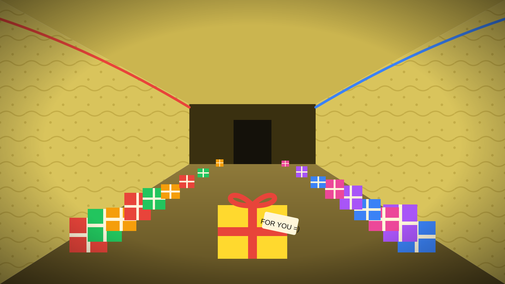
The Present Hallway
One present has your name on it. Don't open it yourself. If the virus opens it, you get a party hat for your inventory.
Play this scene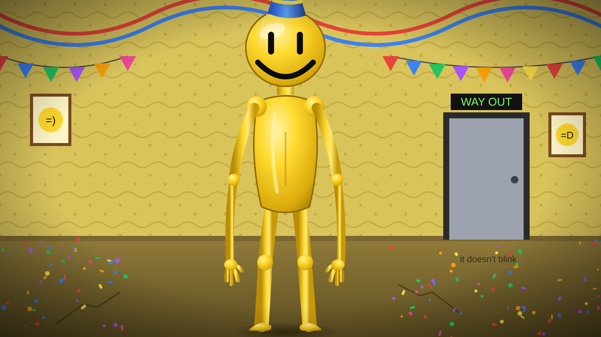
The Way Out
The biggest partygoer guards the door. Wear the party hat to walk past it, or let the virus hold it back.
Play this scene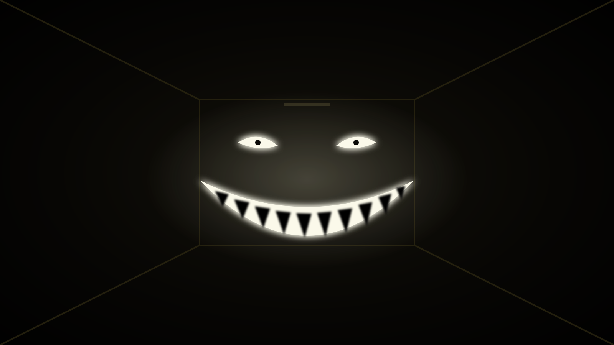
Lost Your Mind
The Smiler. You see this when your sanity hits zero. Drink almond water before it does.
Play from the startHow to find these in the game
- After the poolrooms, pick Habitable zone to go to Level 1.
- Search the crates for almond water and the crowbar, then follow the lights into the Dark Hall and hide fast.
- Behind the pillar, Follow the music to Level Fun, or take the stairwell to skip it.
- At the party, Sneak along the wall, then ease the grey door open. Both routes rejoin the main story at "You made it."
- There are 4 new Level Fun endings to find: the cake, smiling back, the red door, and getting caught.
- Near the end, after the virus mutates, "Be quiet or they'll hear you" leads back into Level Fun with the virus on your side. That section has 3 more endings and 2 ways to escape.